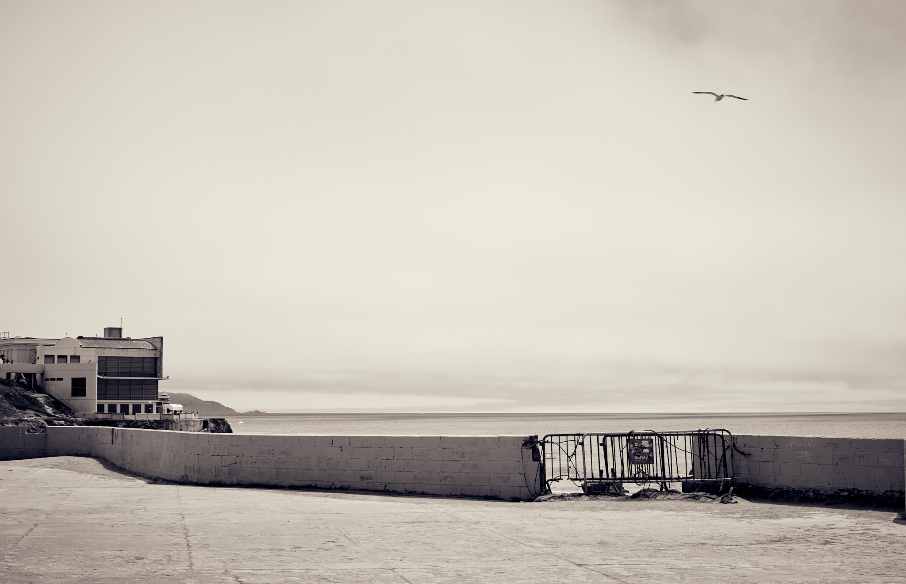

A photographic journey through the old and new along Ocean Beach.
The Sutro Baths has a fascinating history. The ruins attract visitors for its history and stunning views of the Pacific Ocean.
Erosion has taken a toll on the wall, and the closed off area is where the stairs would led down to Sutro Baths. It is also the area where the 1971 movie Harold and Maude was filmed.
The area is the back of the Cliff House restaurant which closed during the height of the pandemic. Above the columns, there are the upper levels with views of the Pacific Ocean and San Francisco Bay.